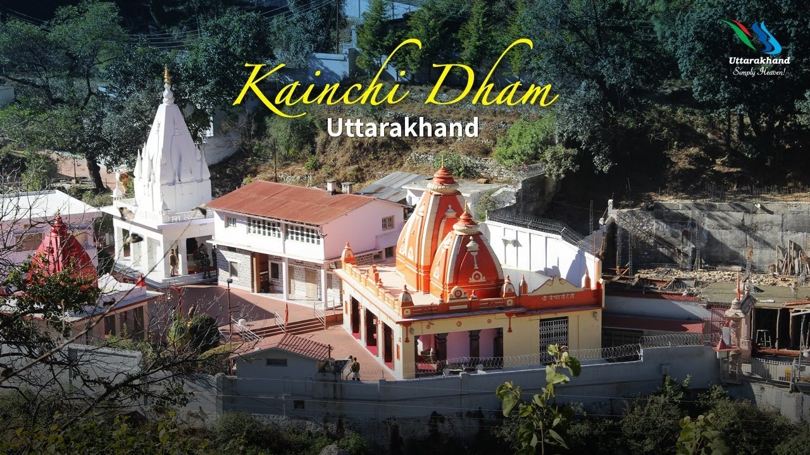

|  |
Maharaj ji |
Lakshman Narayan Sharma was born around 1900
the Neem karol babain the village in district of Uttar Pradesh, India, to a wealthy Brahmin family.
After being married by his parents at the age of 11, left home to become a wandering sadhu. He later returned home, at his father's request, to live a settled married life.